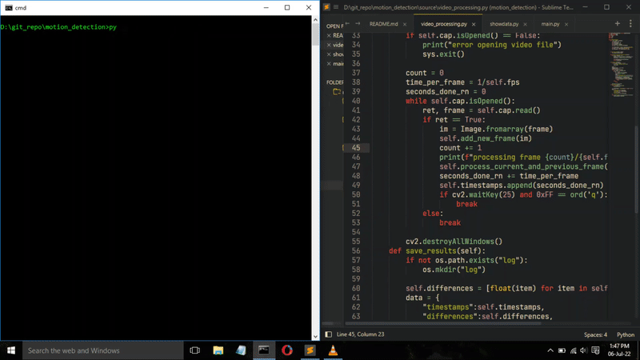
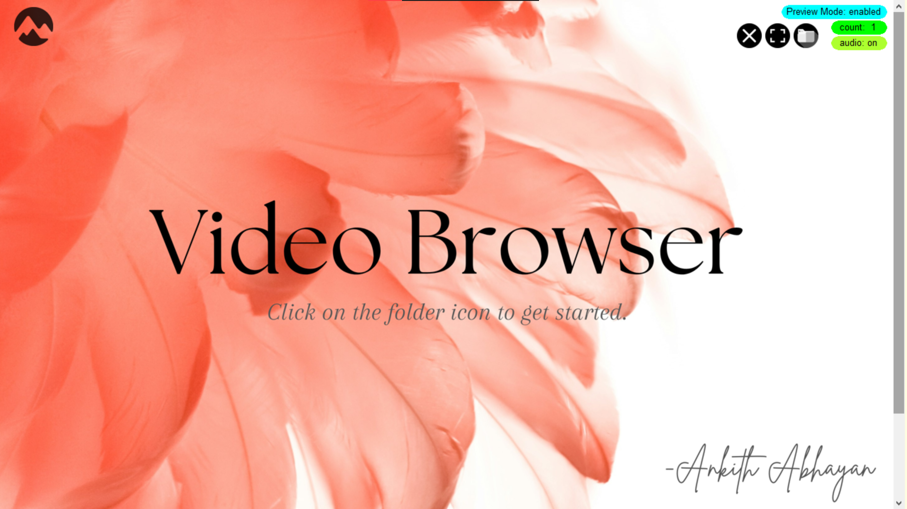
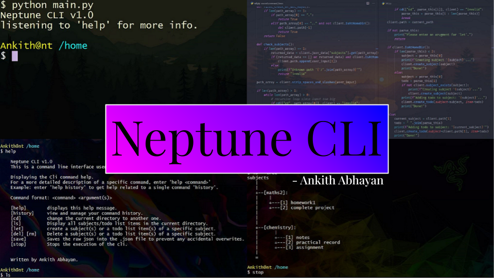
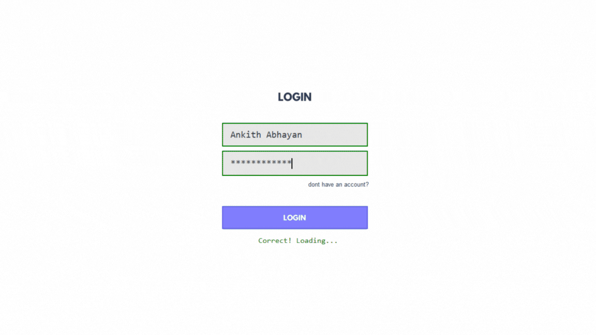

Projects

This model takes in any video as input and computes the magnitude of difference between each frame and plots that value to a graph. The difference is calculated by comparing the corresponding values of each pixel in every frame and finding the average difference in its rgb values. This graph will indicate the presence of motion in a Video.
Technologies used:Python, Open_cv, Matplotlib.

This application allows you to browse the videos in any local folder. By clicking on the desired thumbnail, an external video playing application gets run. It comes with rich features like the ability to preview the video on hover, preview with audio or even several videos at once. These settings can be changed during runtime via the option on the top right.
Technologies used: Python, Tkinter, Open_cv.

This is a command line interface (CLI) that I built which allows you to make todo lists for school. Features include the ability to create and delete subjects, organise lists based on a desired subject, View the current list in different formats, edit and view command history. The CLI was built to mimick a linux file system with linux commands to manage folders.
Technologies used: Python, Json.

KITAB is a book store application built for my 12th grade cs project. This app allows you to browse books and buy them after adding them to cart. Other features include the ability to make accounts, a real-time search feature, ability to pick from several payment options, etc.
This project got us the best project trophy.
Technologies used: Python, MySQL, Tkinter.